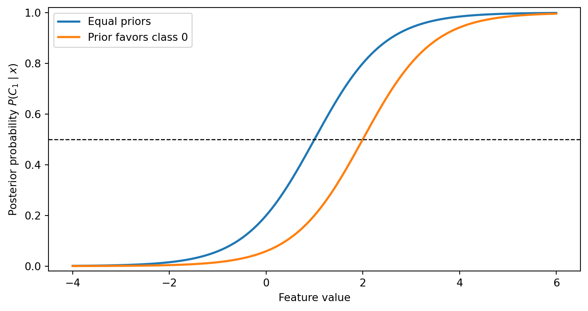
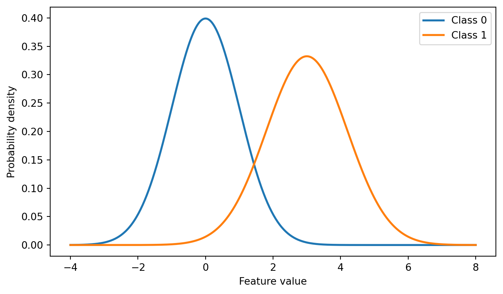
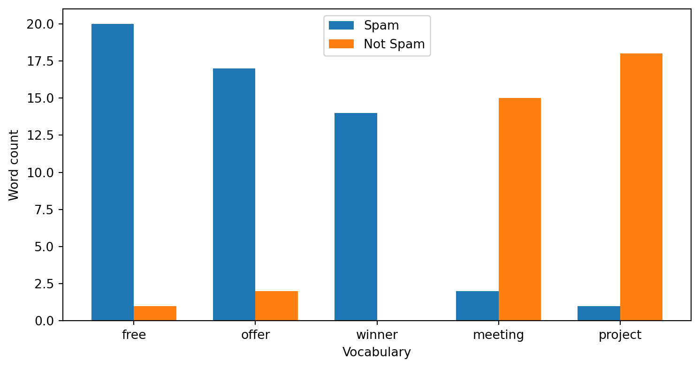
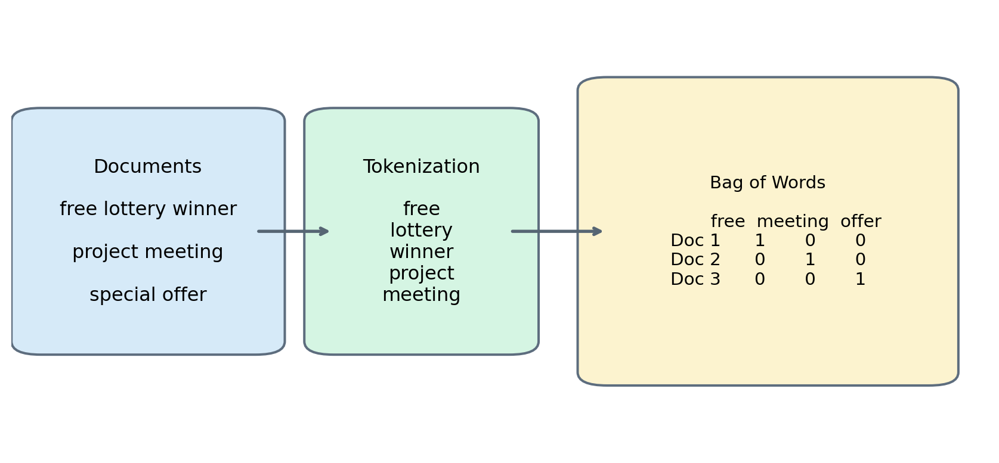
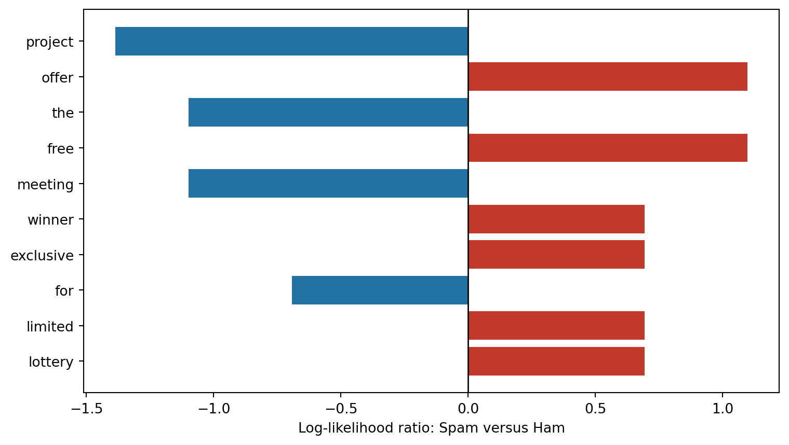
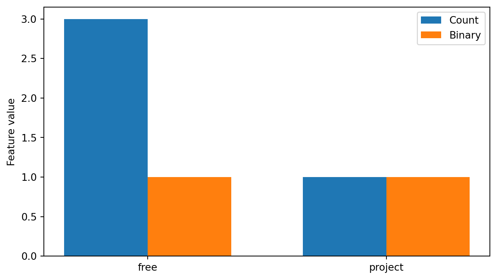
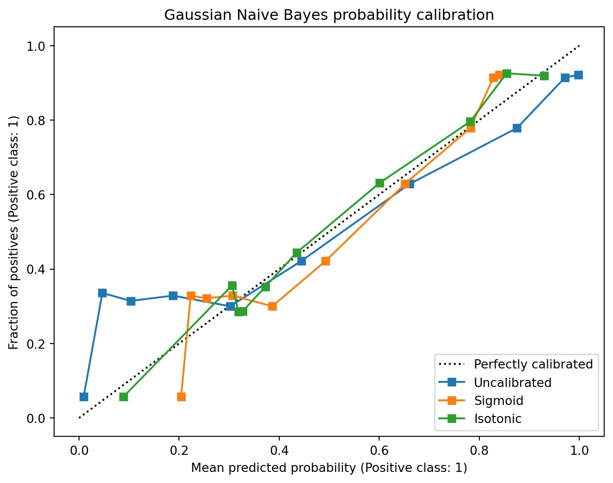

flowchart LR A["Training<br>Data"] A --> B["Estimate Prior<br>Probabilities"] A --> C["Estimate Likelihood<br>of Each Feature"] B --> D["Bayes'<br>Theorem"] C --> D D --> E["Posterior Probability<br>for Each Class"] E --> F["Choose the Class<br>with the Highest<br>Posterior Probability"]
8 Chapter – Naive Bayes
8.1 Introduction
Many familiar classifiers use a discriminative approach: they estimate a decision rule or the conditional probability of a class directly from the predictors. Logistic Regression models \(P(C\mid\mathbf{x})\) and induces a linear boundary, Decision Trees recursively partition the feature space, and Support Vector Machines maximize the separation margin between classes.
Naive Bayes takes a generative approach. It models the class prior \(P(C)\) and the class-conditional distribution \(P(\mathbf{x}\mid C)\), then combines them through Bayes’ Theorem. This procedure also induces decision boundaries, but it does not estimate those boundaries directly.
For prediction, it estimates the posterior probability that an observation belongs to each possible class and assigns the observation to the class with the highest value.
Suppose we want to classify an email as either Spam or Not Spam. Rather than asking
Where should the decision boundary be?
Naive Bayes asks
Given the words contained in this email, how likely is it that the email belongs to each class?
If the estimated probabilities are
| Class | Posterior Probability |
|---|---|
| Spam | 0.94 |
| Not Spam | 0.06 |
the classifier predicts
\[ \hat y = \text{Spam}. \]
This probabilistic perspective makes Naive Bayes one of the simplest and fastest supervised learning algorithms.
The method is based on Bayes’ Theorem, one of the fundamental results in probability theory, which provides a mathematical framework for updating probabilities when new evidence becomes available.
The term naive refers to the assumption that the predictor variables are conditionally independent once the class label is known. In practice, this means that instead of estimating one complex joint probability distribution, Naive Bayes estimates a separate probability for each predictor. Although this assumption is rarely true in real-world datasets, it dramatically simplifies the computations and often leads to surprisingly accurate classifiers.
NoteLearning objectives
After completing this chapter, you should be able to:
- identify the prior, likelihood, evidence, and posterior in Bayes’ Theorem;
- explain the naive conditional independence assumption;
- derive the Naive Bayes classification rule;
- distinguish Gaussian, Multinomial, Bernoulli, and Categorical Naive Bayes;
- explain why smoothing is necessary for count data;
- interpret and configure class prior probabilities;
- train and evaluate Naive Bayes classifiers with Scikit-Learn;
- construct a leakage-free text classification workflow;
- assess and calibrate posterior probability estimates.
In the next section, we introduce Bayes’ Theorem, which provides the probabilistic foundation of every Naive Bayes classifier.
8.2 Bayes’ Theorem
Bayes’ Theorem is one of the fundamental results in probability theory. It provides a mathematical framework for updating probabilities when new evidence becomes available.
Suppose we want to determine the probability that an observation belongs to a particular class after observing a set of predictor variables.
Rather than asking
What is the probability of observing these features given the class?
Bayes’ Theorem answers the inverse question
Given the observed features, what is the probability that the observation belongs to a particular class?
This relationship is expressed mathematically as
\[ P(C \mid \mathbf{x})=\frac{P(\mathbf{x}\mid C)P(C)}{P(\mathbf{x})}, \]
where
\(P(C \mid \mathbf{x})\) is the posterior probability, representing the probability that an observation belongs to class \(C\) after observing the predictor vector \(\mathbf{x}\).
\(P(\mathbf{x} \mid C)\) is the likelihood, representing the probability of observing the predictor variables assuming that the observation belongs to class \(C\).
\(P(C)\) is the prior probability, describing our belief about class \(C\) before observing any predictor variables.
\(P(\mathbf{x})\) is the evidence (or marginal probability), which normalizes the posterior probabilities so that they sum to one.
For classification, the evidence term \(P(\mathbf{x})\) is identical for every candidate class. Consequently, it does not affect which class receives the highest posterior probability.
Therefore, Naive Bayes usually computes
\[ P(C \mid \mathbf{x}) \propto P(\mathbf{x} \mid C) P(C), \]
where the symbol \(\propto\) means proportional to.
Rather than computing the exact posterior probability, the classifier only needs values that are proportional to it, since the predicted class is simply the one with the largest posterior probability.
The prediction rule therefore becomes
\[ \hat{y} = \arg\max_C P(\mathbf{x} \mid C) P(C). \]
This expression forms the mathematical foundation of every Naive Bayes classifier.
The remaining challenge is computing the likelihood \(P(\mathbf{x} \mid C)\), which becomes increasingly difficult as the number of predictor variables grows.
8.3 The Naive Conditional Independence Assumption
Let the predictor vector contain \(p\) features,
\[ \mathbf{x}=(x_1,x_2,\ldots,x_p). \]
In general, computing the joint likelihood \(P(\mathbf{x}\mid C)\) requires modeling all relationships among these features. Naive Bayes simplifies this task by assuming that the features are conditionally independent given the class:
\[ P(\mathbf{x}\mid C) = P(x_1,x_2,\ldots,x_p\mid C) = \prod_{j=1}^{p}P(x_j\mid C). \]
This assumption does not claim that the features are independent in the dataset. It states that, once the class is known, observing one feature provides no additional information about another feature.
Substituting the factorized likelihood into Bayes’ classification rule gives
\[ \hat{y} = \arg\max_C P(C)\prod_{j=1}^{p}P(x_j\mid C). \]
The model therefore estimates a prior for each class and one class-conditional distribution for each feature. This factorization is the defining idea behind every Naive Bayes variant.
8.3.1 Computing in Logarithmic Space
Multiplying many probabilities can produce values so small that they are rounded to zero by finite-precision arithmetic. Naive Bayes implementations avoid this numerical underflow by applying the logarithm to the classification rule. Since the logarithm is strictly increasing, it does not change which class maximizes the score:
\[ \hat{y} = \arg\max_C \left[ \log P(C) + \sum_{j=1}^{p}\log P(x_j\mid C) \right]. \]
The product of likelihoods becomes a sum of log-likelihoods, which is both numerically stable and computationally convenient. Scikit-Learn uses this strategy internally.
8.3.2 A Manual Classification Example
Consider two classes, \(C_0\) and \(C_1\), and an observation with two features. Suppose the estimated quantities are
| Quantity | \(C_0\) | \(C_1\) |
|---|---|---|
| Prior \(P(C)\) | 0.60 | 0.40 |
| \(P(x_1\mid C)\) | 0.20 | 0.80 |
| \(P(x_2\mid C)\) | 0.70 | 0.60 |
The unnormalized posterior scores are
\[ s_0=0.60\times0.20\times0.70=0.084, \]
and
\[ s_1=0.40\times0.80\times0.60=0.192. \]
Since \(s_1>s_0\), the predicted class is \(C_1\). If normalized posterior probabilities are required, the evidence is the sum of the class scores:
\[ P(C_0\mid\mathbf{x}) = \frac{0.084}{0.084+0.192} \approx 0.304, \]
\[ P(C_1\mid\mathbf{x}) = \frac{0.192}{0.084+0.192} \approx 0.696. \]
This normalization is required to report probabilities, but not to select the class with the largest score.
The general workflow of the algorithm is illustrated below.
Unlike many machine learning algorithms, Naive Bayes does not require an iterative optimization procedure. During training, the algorithm simply estimates a small number of probabilities from the training data. Prediction then consists of applying Bayes’ Theorem to compute the posterior probability of each candidate class.
Because of this simplicity, Naive Bayes offers several practical advantages.
- Extremely fast training.
- Very fast predictions.
- Performs well with relatively small datasets.
- Produces posterior probability estimates.
- Particularly effective for high-dimensional data, such as text documents.
However, these advantages come at the cost of a strong modeling assumption. When predictors are highly dependent within a class, Naive Bayes may produce overly confident posterior probabilities even when its class predictions remain accurate. Its probability estimates should therefore be assessed before they are used in probability-sensitive decisions.
8.4 Class Prior Probabilities
The prior \(P(C)\) controls how plausible each class is before the predictors are observed. By default, Scikit-Learn estimates priors from the relative class frequencies in the training data. A practitioner may instead provide priors based on reliable external information, such as a known disease prevalence or a documented fraud rate.
The following figure shows how the prior changes posterior probabilities even when the class-conditional densities remain fixed.
Show code
import numpy as np
import matplotlib.pyplot as plt
def normal_density(values, mean, standard_deviation):
coefficient = 1 / (standard_deviation * np.sqrt(2 * np.pi))
exponent = -0.5 * ((values - mean) / standard_deviation) ** 2
return coefficient * np.exp(exponent)
x_prior = np.linspace(-4, 6, 500)
likelihood_0 = normal_density(x_prior, mean=0, standard_deviation=1.2)
likelihood_1 = normal_density(x_prior, mean=2, standard_deviation=1.2)
fig, ax = plt.subplots(figsize=(9, 4.5))
for prior_0, prior_1, label in [
(0.50, 0.50, "Equal priors"),
(0.80, 0.20, "Prior favors class 0"),
]:
score_0 = prior_0 * likelihood_0
score_1 = prior_1 * likelihood_1
posterior_1 = score_1 / (score_0 + score_1)
ax.plot(x_prior, posterior_1, linewidth=2, label=label)
ax.axhline(0.5, color="black", linestyle="--", linewidth=1)
ax.set_xlabel("Feature value")
ax.set_ylabel(r"Posterior probability $P(C_1\mid x)$")
ax.set_ylim(-0.02, 1.02)
ax.legend()
plt.show()
In Scikit-Learn, GaussianNB uses the priors parameter, while MultinomialNB, BernoulliNB, and CategoricalNB use class_prior. The supplied values must correspond to classes_ order and form a valid probability distribution. For the discrete variants, setting fit_prior=False requests a uniform prior.
Changing priors is not a substitute for evaluating a model under class imbalance. Priors should reflect the target population or a defensible modeling scenario, not be selected to improve test-set performance.
8.5 Choosing a Naive Bayes Variant
The form of each class-conditional distribution determines the appropriate variant.
| Variant | Predictor representation | Typical application |
|---|---|---|
GaussianNB |
Continuous measurements | Biomedical or sensor data |
MultinomialNB |
Nonnegative event counts | Word-frequency text models |
BernoulliNB |
Binary indicators | Word presence or absence |
CategoricalNB |
Integer-coded categories | Discrete attributes such as color or weather |
The distribution should be selected from the meaning and support of the predictors, not simply from their stored data type. For example, integer values from 1 to 5 may represent categories rather than event counts and therefore do not automatically justify Multinomial Naive Bayes.
We begin with continuous predictors modeled using Gaussian distributions.
8.6 Gaussian Naive Bayes
A common variant is Gaussian Naive Bayes. This model is designed for datasets whose predictor variables are continuous.
The key assumption is that, within each class, every predictor follows a Gaussian (normal) distribution.
For a given feature \(x_j\) and class \(C\),
\[ x_j \mid C \sim \mathcal{N}(\mu_{j,C},\sigma_{j,C}^{2}), \]
where
- \(\mu_{j,C}\) is the mean of feature \(j\) for class \(C\),
- \(\sigma_{j,C}^{2}\) is the corresponding variance.
Consequently, the conditional density at a value \(x_j\) is obtained from the Gaussian probability density function,
\[ p(x_j \mid C) = \frac{1}{\sqrt{2\pi\sigma_{j,C}^{2}}} \exp\left(-\frac{(x_j - \mu_{j,C})^{2}}{2\sigma_{j,C}^{2}}\right). \]
During training, Gaussian Naive Bayes simply estimates the mean and variance of every feature within each class. These quantities are then used to compute the posterior probabilities for new observations.
The following figure illustrates the underlying assumption.
Show code
import numpy as np
import matplotlib.pyplot as plt
x = np.linspace(-4, 8, 400)
mu1, sigma1 = 0, 1
mu2, sigma2 = 3, 1.2
pdf1 = (
1/(sigma1*np.sqrt(2*np.pi))
* np.exp(-(x-mu1)**2/(2*sigma1**2))
)
pdf2 = (
1/(sigma2*np.sqrt(2*np.pi))
* np.exp(-(x-mu2)**2/(2*sigma2**2))
)
fig, ax = plt.subplots(figsize=(8,4.5))
ax.plot(
x,
pdf1,
linewidth=2,
label="Class 0"
)
ax.plot(
x,
pdf2,
linewidth=2,
label="Class 1"
)
ax.set_xlabel("Feature value")
ax.set_ylabel("Probability density")
ax.legend()
plt.show()
The curves represent the probability densities of the same predictor for two different classes. Although both follow Gaussian distributions, they have different means and variances. A new observation receives stronger support from the class whose distribution assigns it a higher density, together with the densities of the remaining features and the class prior.
Scikit-Learn implements this classifier through the GaussianNB class.
from sklearn.naive_bayes import GaussianNBIn the following example, we train a Gaussian Naive Bayes classifier using the Iris dataset.
from sklearn.datasets import load_iris
from sklearn.model_selection import train_test_split
iris = load_iris()
X = iris.data
y = iris.target
X_train, X_test, y_train, y_test = train_test_split(X, y, test_size=0.25, random_state=42, stratify=y)The classifier is trained as follows.
gnb = GaussianNB()
gnb.fit(X_train, y_train)GaussianNB()In a Jupyter environment, please rerun this cell to show the HTML representation or trust the notebook.
On GitHub, the HTML representation is unable to render, please try loading this page with nbviewer.org.
GaussianNB()
Predictions are obtained using the familiar predict() method.
y_pred = gnb.predict(X_test)The classification accuracy can then be evaluated.
from sklearn.metrics import accuracy_score
accuracy = accuracy_score(y_test, y_pred)
print(f"Accuracy: {accuracy:.3f}")Accuracy: 0.9218.6.1 Inspecting the Learned Gaussian Parameters
The fitted means, variances, and priors are available through theta_, var_, and class_prior_. Each row corresponds to a class and each column to a predictor.
import pandas as pd
mean_table = pd.DataFrame(
gnb.theta_,
index=iris.target_names,
columns=iris.feature_names
)
variance_table = pd.DataFrame(
gnb.var_,
index=iris.target_names,
columns=iris.feature_names
)
prior_table = pd.Series(
gnb.class_prior_,
index=iris.target_names,
name="Prior"
)
display(prior_table.to_frame())
display(mean_table.round(3))
display(variance_table.round(3))| Prior | |
|---|---|
| setosa | 0.339286 |
| versicolor | 0.330357 |
| virginica | 0.330357 |
| sepal length (cm) | sepal width (cm) | petal length (cm) | petal width (cm) | |
|---|---|---|---|---|
| setosa | 4.995 | 3.450 | 1.482 | 0.247 |
| versicolor | 5.997 | 2.743 | 4.265 | 1.311 |
| virginica | 6.665 | 2.995 | 5.608 | 2.049 |
| sepal length (cm) | sepal width (cm) | petal length (cm) | petal width (cm) | |
|---|---|---|---|---|
| setosa | 0.091 | 0.128 | 0.023 | 0.012 |
| versicolor | 0.248 | 0.084 | 0.205 | 0.034 |
| virginica | 0.408 | 0.115 | 0.315 | 0.070 |
For a new observation, predict_proba() normalizes the class scores and returns them in the order stored by classes_.
observation = X_test[[0]]
probabilities = gnb.predict_proba(observation)
pd.DataFrame(
probabilities,
columns=iris.target_names,
index=["Observation"]
).round(4)| setosa | versicolor | virginica | |
|---|---|---|---|
| Observation | 1.0 | 0.0 | 0.0 |
Unlike many machine learning algorithms, Gaussian Naive Bayes has very few hyperparameters. Most of the learning process consists simply of estimating the mean and variance of each predictor within every class. The var_smoothing parameter adds a small stability term to the estimated variances, preventing numerical problems when a predictor has almost no variation within a class. It is primarily a numerical regularization parameter and can be tuned by cross-validation when necessary.
NoteWhen should Gaussian Naive Bayes be used?
Gaussian Naive Bayes is appropriate when the predictor variables are continuous and approximately normally distributed within each class.
Typical applications include biomedical measurements, sensor data, environmental variables, and many classical tabular datasets.
8.7 Multinomial Naive Bayes
While Gaussian Naive Bayes assumes that each feature follows a normal distribution, Multinomial Naive Bayes is designed for discrete count data.
Instead of modeling continuous measurements, this classifier models the frequency with which events occur. Typical examples include
- word counts in text documents,
- product purchase frequencies,
- website click counts,
- occurrences of DNA sequences.
Suppose a document is represented by a vector of word counts,
\[ \mathbf{x} =(x_1,x_2,\ldots,x_p), \]
where \(x_j\) denotes the number of times the \(j\)-th word appears in the document.
The likelihood is modeled using the Multinomial distribution,
\[ P(\mathbf{x}\mid C) = \frac{ \left(\sum_{j=1}^{p} x_j\right)! }{ \prod_{j=1}^{p} x_j! } \prod_{j=1}^{p} \theta_{j\mid C}^{x_j}. \]
where
- \(x_j\) is the number of occurrences of feature \(j\),
- \(\theta_{j|C}\) is the probability of observing feature \(j\) in class \(C\).
For a fixed observation, the multinomial coefficient does not depend on the candidate class and can be omitted when comparing class scores. Scikit-Learn therefore evaluates the class prior and the feature-dependent log-likelihood terms needed by the argmax rule.
8.7.1 Additive Smoothing
A direct frequency estimate can assign \(\theta_{j\mid C}=0\) when feature \(j\) never appears in the training observations from class \(C\). Because the likelihood contains a product, one zero-valued feature probability would make the entire likelihood equal to zero.
Multinomial Naive Bayes avoids this zero-frequency problem through additive smoothing:
\[ \hat{\theta}_{j\mid C} = \frac{N_{j,C}+\alpha} {\sum_{k=1}^{p}N_{k,C}+\alpha p}, \]
where \(N_{j,C}\) is the total count of feature \(j\) in class \(C\) and \(\alpha\) controls the smoothing strength. Setting \(\alpha=1\) gives Laplace smoothing, which is also the default used by Scikit-Learn’s MultinomialNB.
Users of Scikit-Learn do not need to compute these quantities manually. During training, the algorithm estimates the smoothed feature probabilities within every class and performs its internal calculations in logarithmic space to avoid numerical underflow.
The following illustration summarizes the intuition.
Show code
import matplotlib.pyplot as plt
import numpy as np
words = ["free","offer","winner","meeting","project"]
spam = [20,17,14,2,1]
ham = [1,2,0,15,18]
x = np.arange(len(words))
width = 0.35
fig, ax = plt.subplots(figsize=(9,4.5))
ax.bar(x-width/2, spam, width, label="Spam")
ax.bar(x+width/2, ham, width, label="Not Spam")
ax.set_xticks(x)
ax.set_xticklabels(words)
ax.set_ylabel("Word count")
ax.set_xlabel("Vocabulary")
ax.legend()
plt.show()
The figure shows that certain words occur much more frequently in spam emails than in legitimate messages. During training, Multinomial Naive Bayes learns these frequencies and uses them to estimate the posterior probability of a new document.
Scikit-Learn implements this classifier through the MultinomialNB class.
from sklearn.feature_extraction.text import CountVectorizer
from sklearn.model_selection import train_test_split
from sklearn.naive_bayes import MultinomialNB
from sklearn.metrics import accuracy_scoreFor illustration, consider the following small collection of documents.
documents = [
"free lottery winner claim prize now",
"exclusive offer free vacation",
"claim your free money today",
"limited time special offer",
"project meeting tomorrow morning",
"please review the project report",
"team meeting scheduled today",
"presentation for the project meeting"
]
labels = [
"Spam",
"Spam",
"Spam",
"Spam",
"Ham",
"Ham",
"Ham",
"Ham"
]Before a machine learning algorithm can process text, the documents must be converted into numerical features. The most common representation is the Bag-of-Words model, where each document is transformed into a vector containing the frequency of every word in the vocabulary.
The overall process is illustrated below.
Show code
import matplotlib.pyplot as plt
from matplotlib.patches import FancyBboxPatch
fig, ax = plt.subplots(figsize=(11,5))
ax.set_xlim(0,1)
ax.set_ylim(0,1)
ax.axis("off")
def draw_box(x,y,w,h,color,text,size=12):
box = FancyBboxPatch(
(x,y),
w,
h,
boxstyle="round,pad=0.03",
facecolor=color,
edgecolor="#5D6D7E",
linewidth=1.5
)
ax.add_patch(box)
ax.text(
x+w/2,
y+h/2,
text,
ha="center",
va="center",
fontsize=size
)
draw_box(
0.03,0.25,0.22,0.50,
"#D6EAF8",
"Documents\n\nfree lottery winner\n\nproject meeting\n\nspecial offer"
)
draw_box(
0.33,0.25,0.18,0.50,
"#D5F5E3",
"Tokenization\n\nfree\nlottery\nwinner\nproject\nmeeting"
)
draw_box(
0.61,0.18,0.33,0.64,
"#FCF3CF",
"Bag of Words\n\n"
" free meeting offer\n"
"Doc 1 1 0 0\n"
"Doc 2 0 1 0\n"
"Doc 3 0 0 1",
size=11
)
arrow = dict(
arrowstyle="->",
lw=2,
color="#566573"
)
ax.annotate("", xy=(0.33,0.50), xytext=(0.25,0.50), arrowprops=arrow)
ax.annotate("", xy=(0.61,0.50), xytext=(0.51,0.50), arrowprops=arrow)
plt.show()
Before constructing the vocabulary, the raw documents are divided into training and testing sets.
documents_train, documents_test, y_train, y_test = train_test_split(
documents,
labels,
test_size=0.25,
random_state=42,
stratify=labels
)Scikit-Learn performs the Bag-of-Words transformation using CountVectorizer. The vectorizer is fitted only on the training documents so that information from the test set does not influence the learned vocabulary.
vectorizer = CountVectorizer()
X_train = vectorizer.fit_transform(documents_train)
X_test = vectorizer.transform(documents_test)
(X_train.shape, X_test.shape)((6, 22), (2, 22))Each row represents one document, while each column corresponds to a word learned from the training corpus. Applying transform() to the test documents preserves the same feature space without refitting the vectorizer.
The learned vocabulary and count matrix can be inspected directly. The following table is intentionally small; converting a large sparse text matrix to a dense array would consume unnecessary memory.
feature_names = vectorizer.get_feature_names_out()
print("Vocabulary:", feature_names)
pd.DataFrame(
X_train[:3].toarray(),
columns=feature_names,
index=["Training document 1", "Training document 2", "Training document 3"]
)Vocabulary: ['claim' 'exclusive' 'for' 'free' 'limited' 'lottery' 'meeting' 'morning'
'now' 'offer' 'please' 'presentation' 'prize' 'project' 'report' 'review'
'special' 'the' 'time' 'tomorrow' 'vacation' 'winner']| claim | exclusive | for | free | limited | lottery | meeting | morning | now | offer | ... | prize | project | report | review | special | the | time | tomorrow | vacation | winner | |
|---|---|---|---|---|---|---|---|---|---|---|---|---|---|---|---|---|---|---|---|---|---|
| Training document 1 | 1 | 0 | 0 | 1 | 0 | 1 | 0 | 0 | 1 | 0 | ... | 1 | 0 | 0 | 0 | 0 | 0 | 0 | 0 | 0 | 1 |
| Training document 2 | 0 | 0 | 0 | 0 | 0 | 0 | 0 | 0 | 0 | 0 | ... | 0 | 1 | 1 | 1 | 0 | 1 | 0 | 0 | 0 | 0 |
| Training document 3 | 0 | 1 | 0 | 1 | 0 | 0 | 0 | 0 | 0 | 1 | ... | 0 | 0 | 0 | 0 | 0 | 0 | 0 | 0 | 1 | 0 |
3 rows × 22 columns
Training the classifier follows the same workflow used throughout Scikit-Learn.
mnb = MultinomialNB()
mnb.fit(X_train, y_train)MultinomialNB()In a Jupyter environment, please rerun this cell to show the HTML representation or trust the notebook.
On GitHub, the HTML representation is unable to render, please try loading this page with nbviewer.org.
MultinomialNB()
The estimator stores log priors in class_log_prior_ and smoothed log feature probabilities in feature_log_prob_. For binary text classification, subtracting the feature log probabilities reveals which words provide more support for one class than the other.
Show code
spam_index = np.flatnonzero(mnb.classes_ == "Spam")[0]
ham_index = np.flatnonzero(mnb.classes_ == "Ham")[0]
log_likelihood_ratio = (
mnb.feature_log_prob_[spam_index]
- mnb.feature_log_prob_[ham_index]
)
most_informative = np.argsort(np.abs(log_likelihood_ratio))[-10:]
selected_words = feature_names[most_informative]
selected_values = log_likelihood_ratio[most_informative]
colors = np.where(selected_values > 0, "#C0392B", "#2471A3")
fig, ax = plt.subplots(figsize=(9, 5))
ax.barh(selected_words, selected_values, color=colors)
ax.axvline(0, color="black", linewidth=1)
ax.set_xlabel("Log-likelihood ratio: Spam versus Ham")
plt.show()
Predictions are obtained using the predict() method.
y_pred = mnb.predict(X_test)
print(y_pred)['Ham' 'Spam']For this demonstration, the predictions can be compared with the test labels using classification accuracy.
accuracy = accuracy_score(y_test, y_pred)
print(f"Accuracy: {accuracy:.3f}")Accuracy: 1.000This test set contains only two documents. Its accuracy illustrates the evaluation API but is not a reliable estimate of performance on unseen email. A real application requires a substantially larger representative dataset and cross-validation or a sufficiently large held-out test set.
Finally, the trained model can classify completely new documents.
new_email = [
"free prize claim your offer"
]
new_email_vector = vectorizer.transform(new_email)
prediction = mnb.predict(new_email_vector)
print(prediction)['Spam']The classifier correctly identifies that this document resembles the vocabulary commonly observed in spam messages.
Unlike Gaussian Naive Bayes, which models continuous variables, Multinomial Naive Bayes models feature frequencies, making it particularly suitable for text mining and Natural Language Processing (NLP).
8.7.2 A Pipeline for Text Classification
The vectorizer and classifier should normally be combined in a Pipeline. During cross-validation, this ensures that the vocabulary is learned independently inside each training fold and prevents information from validation folds from leaking into preprocessing.
from sklearn.pipeline import Pipeline
text_classifier = Pipeline([
("vectorizer", CountVectorizer()),
("classifier", MultinomialNB(alpha=1.0))
])
text_classifier.fit(documents_train, y_train)
text_classifier.predict(new_email)array(['Spam'], dtype='<U4')Multinomial Naive Bayes is derived for event counts, but it is also commonly and successfully applied to nonnegative TF-IDF features. This use is an effective empirical approximation rather than an exact multinomial count model. Whether counts or TF-IDF perform better should be determined through cross-validation on the target task.
NoteWhen should Multinomial Naive Bayes be used?
Multinomial Naive Bayes is appropriate whenever the predictor variables represent counts or frequencies.
Typical applications include
- spam filtering,
- document classification,
- sentiment analysis,
- topic identification,
- information retrieval,
- email categorization.
8.8 Bernoulli Naive Bayes
Bernoulli Naive Bayes is designed for binary predictors \(x_j\in\{0,1\}\). For text data, a value of \(1\) may indicate that a word occurs at least once in a document, while \(0\) indicates that the word is absent.
For class \(C\), let
\[ \theta_{j\mid C}=P(x_j=1\mid C). \]
The Bernoulli likelihood is
\[ P(\mathbf{x}\mid C) = \prod_{j=1}^{p} \theta_{j\mid C}^{x_j} (1-\theta_{j\mid C})^{1-x_j}. \]
Both presence and absence contribute to the likelihood. This differs from Multinomial Naive Bayes, where repeated occurrences increase a feature count and absent terms do not contribute to the product because their exponent is zero.
With additive smoothing, the Bernoulli parameter estimate is
\[ \hat{\theta}_{j\mid C} = \frac{N_{j,C}+\alpha}{N_C+2\alpha}, \]
where \(N_{j,C}\) is the number of class-\(C\) observations in which feature \(j\) is present and \(N_C\) is the number of training observations in class \(C\).
Scikit-Learn implements this model with BernoulliNB. Setting binary=True in CountVectorizer converts every positive word count to one.
from sklearn.naive_bayes import BernoulliNB
binary_vectorizer = CountVectorizer(binary=True)
X_binary_train = binary_vectorizer.fit_transform(documents_train)
X_binary_test = binary_vectorizer.transform(documents_test)
bnb = BernoulliNB(alpha=1.0)
bnb.fit(X_binary_train, y_train)
binary_predictions = bnb.predict(X_binary_test)
binary_predictionsarray(['Ham', 'Spam'], dtype='<U4')The next figure illustrates the representational difference. Repeating a word changes its Multinomial count but not its Bernoulli indicator.
Show code
comparison_document = ["free free free project"]
comparison_terms = ["free", "project"]
count_values = vectorizer.transform(comparison_document).toarray()[0]
binary_values = binary_vectorizer.transform(comparison_document).toarray()[0]
count_lookup = dict(zip(vectorizer.get_feature_names_out(), count_values))
binary_lookup = dict(
zip(binary_vectorizer.get_feature_names_out(), binary_values)
)
count_display = [count_lookup[term] for term in comparison_terms]
binary_display = [binary_lookup[term] for term in comparison_terms]
positions = np.arange(len(comparison_terms))
width = 0.35
fig, ax = plt.subplots(figsize=(8, 4.5))
ax.bar(positions - width / 2, count_display, width, label="Count")
ax.bar(positions + width / 2, binary_display, width, label="Binary")
ax.set_xticks(positions)
ax.set_xticklabels(comparison_terms)
ax.set_ylabel("Feature value")
ax.legend()
plt.show()
NoteMultinomial or Bernoulli for text?
Use Multinomial Naive Bayes when repeated occurrences carry useful information. Use Bernoulli Naive Bayes when presence or absence is more meaningful than frequency, particularly for short documents. The preferred representation is an empirical question and should be selected with cross-validation.
8.9 Categorical Naive Bayes
Categorical Naive Bayes models predictors that take one value from a finite set of categories. For feature \(j\), category \(r\), and class \(C\), it estimates
\[ \theta_{j,r\mid C}=P(x_j=r\mid C). \]
The class-conditional likelihood remains factorized across predictors:
\[ P(\mathbf{x}\mid C) = \prod_{j=1}^{p}\theta_{j,x_j\mid C}. \]
Unlike Multinomial Naive Bayes, the integer assigned to a category is only an index. Category 2 is not interpreted as occurring twice or as being twice category 1.
The following dataset is used only to demonstrate the API. Each predictor contains categories rather than continuous measurements or event counts.
weather_data = pd.DataFrame({
"outlook": [
"sunny", "sunny", "overcast", "rain", "rain",
"overcast", "sunny", "rain", "overcast", "sunny"
],
"wind": [
"weak", "strong", "weak", "weak", "strong",
"strong", "weak", "weak", "strong", "strong"
],
"humidity": [
"high", "high", "high", "normal", "normal",
"normal", "normal", "high", "normal", "normal"
],
"play": [
"No", "No", "Yes", "Yes", "No",
"Yes", "Yes", "No", "Yes", "Yes"
]
})
X_weather = weather_data.drop(columns="play")
y_weather = weather_data["play"]Scikit-Learn’s CategoricalNB requires nonnegative integer category indices. OrdinalEncoder supplies those indices without implying an ordinal relationship to the estimator.
from sklearn.naive_bayes import CategoricalNB
from sklearn.preprocessing import OrdinalEncoder
categorical_encoder = OrdinalEncoder()
X_weather_encoded = categorical_encoder.fit_transform(X_weather)
cnb = CategoricalNB(alpha=1.0)
cnb.fit(X_weather_encoded, y_weather)
new_weather = pd.DataFrame({
"outlook": ["overcast"],
"wind": ["weak"],
"humidity": ["normal"]
})
new_weather_encoded = categorical_encoder.transform(new_weather)
print("Prediction:", cnb.predict(new_weather_encoded)[0])
print("Probabilities:", cnb.predict_proba(new_weather_encoded).round(3))Prediction: Yes
Probabilities: [[0.087 0.913]]An unseen category cannot be handled safely by assigning an arbitrary negative code: CategoricalNB expects valid nonnegative indices with learned probabilities. Production workflows must define an explicit unknown category during training or validate and map categories consistently before prediction.
8.10 Data with Mixed Predictor Types
A dataset may contain continuous, binary, and categorical predictors simultaneously. A standard Scikit-Learn Naive Bayes estimator applies one likelihood family to every input column; it does not automatically use a Gaussian likelihood for one column and a Bernoulli likelihood for another.
Applying GaussianNB to one-hot encoded categories is computationally possible, but it treats those binary indicators as Gaussian measurements and is not a faithful mixed-likelihood Naive Bayes model. More defensible options include:
- discretize continuous predictors and model all columns with
CategoricalNB; - use one common representation whose assumptions are acceptable for the task;
- implement a hybrid model that combines a different class-conditional likelihood for each feature group.
The first option is illustrated below. Age is discretized into three categories, city is encoded as a category index, and the binary student indicator is passed through unchanged. All resulting columns are therefore valid categorical inputs. The complete toy dataset is used only to demonstrate preprocessing and prediction; no performance estimate is reported from these same observations.
from sklearn.compose import ColumnTransformer
from sklearn.preprocessing import KBinsDiscretizer
customer_data = pd.DataFrame({
"age": [25, 32, 47, 51, 62, 23, 40, 36, 55, 29, 44, 34],
"is_student": [1, 0, 0, 0, 0, 1, 0, 1, 0, 1, 0, 1],
"city": ["A", "B", "A", "C", "B", "A", "C", "B", "C", "A", "B", "C"],
"purchase": [1, 0, 1, 0, 0, 1, 0, 1, 0, 1, 1, 0]
})
X_customer = customer_data.drop(columns="purchase")
y_customer = customer_data["purchase"]
categorical_preprocessor = ColumnTransformer([
(
"age_bins",
KBinsDiscretizer(n_bins=3, encode="ordinal", strategy="quantile"),
["age"]
),
("city", OrdinalEncoder(), ["city"]),
("student", "passthrough", ["is_student"])
])
customer_classifier = Pipeline([
("preprocessor", categorical_preprocessor),
("classifier", CategoricalNB(alpha=1.0))
])
customer_classifier.fit(X_customer, y_customer)
new_customer = pd.DataFrame({
"age": [30],
"is_student": [1],
"city": ["A"]
})
customer_classifier.predict(new_customer)array([1])This pipeline is coherent because every transformed feature is categorical. Its cost is information loss from discretizing age. A true mixed-likelihood model can preserve the continuous measurement, but it requires a custom estimator or a library that explicitly supports heterogeneous Naive Bayes distributions.
8.11 Practical Modeling Guidelines
A reliable Naive Bayes workflow should follow these principles:
- Select the variant from the statistical meaning and support of the predictors.
- Split the observations before fitting vectorizers, encoders, or discretizers.
- Place learned preprocessing inside a
Pipelineduring cross-validation. - Tune smoothing and other hyperparameters using training or validation data only.
- Supply external priors only when they are defensible for the target population.
- Evaluate classification performance with metrics appropriate to class balance and decision costs.
- Evaluate calibration separately when predicted probabilities will drive decisions.
- Investigate strongly redundant predictors, since dependence can create overconfident probabilities.
Common errors include treating arbitrary integer categories as counts, interpreting feature independence as unconditional independence, fitting a vocabulary on the complete dataset, and assuming that every value returned by predict_proba() is automatically calibrated.
8.12 Probability Calibration
A classifier is well calibrated when predictions near a probability \(q\) correspond to a positive-class frequency close to \(q\). For example, among observations assigned a probability near \(0.70\), approximately \(70\%\) should belong to the positive class.
Naive Bayes can classify accurately while producing poorly calibrated probabilities. Correlated predictors are effectively counted multiple times under the conditional independence assumption, which often pushes posterior estimates toward zero or one. Calibration learns a mapping from the original model scores to probabilities that better match observed frequencies.
Scikit-Learn provides two common methods through CalibratedClassifierCV:
- sigmoid calibration fits a parametric logistic mapping and is usually the safer option with limited calibration data;
- isotonic calibration fits a flexible monotonic mapping and generally requires more observations to avoid overfitting.
The following reproducible example intentionally contains redundant, correlated predictors. The test set remains untouched while each calibrator uses cross-validation within the training set.
from sklearn.calibration import CalibratedClassifierCV
from sklearn.datasets import make_classification
from sklearn.metrics import brier_score_loss, log_loss
X_calibration, y_calibration = make_classification(
n_samples=4000,
n_features=12,
n_informative=4,
n_redundant=6,
n_clusters_per_class=2,
class_sep=0.8,
flip_y=0.05,
random_state=42
)
(
X_calibration_train,
X_calibration_test,
y_calibration_train,
y_calibration_test
) = train_test_split(
X_calibration,
y_calibration,
test_size=0.35,
stratify=y_calibration,
random_state=42
)
raw_gnb = GaussianNB()
sigmoid_gnb = CalibratedClassifierCV(
GaussianNB(),
method="sigmoid",
cv=5
)
isotonic_gnb = CalibratedClassifierCV(
GaussianNB(),
method="isotonic",
cv=5
)
calibration_models = {
"Uncalibrated": raw_gnb,
"Sigmoid": sigmoid_gnb,
"Isotonic": isotonic_gnb
}
for model in calibration_models.values():
model.fit(X_calibration_train, y_calibration_train)A calibration curve compares predicted probabilities with observed positive-class frequencies. A perfectly calibrated model would follow the diagonal.
Show code
from sklearn.calibration import CalibrationDisplay
fig, ax = plt.subplots(figsize=(8, 6))
for name, model in calibration_models.items():
positive_probability = model.predict_proba(X_calibration_test)[:, 1]
CalibrationDisplay.from_predictions(
y_calibration_test,
positive_probability,
n_bins=10,
strategy="quantile",
name=name,
ax=ax
)
ax.set_title("Gaussian Naive Bayes probability calibration")
plt.show()
Calibration quality can be summarized with the Brier score and log loss; lower values are better. These metrics evaluate probability quality rather than only the final class decision.
calibration_results = []
for name, model in calibration_models.items():
positive_probability = model.predict_proba(X_calibration_test)[:, 1]
class_probabilities = model.predict_proba(X_calibration_test)
calibration_results.append({
"Model": name,
"Brier score": brier_score_loss(
y_calibration_test,
positive_probability
),
"Log loss": log_loss(
y_calibration_test,
class_probabilities
)
})
pd.DataFrame(calibration_results).set_index("Model").round(4)| Brier score | Log loss | |
|---|---|---|
| Model | ||
| Uncalibrated | 0.1889 | 0.6224 |
| Sigmoid | 0.1782 | 0.5364 |
| Isotonic | 0.1727 | 0.5165 |
The calibrated models improve probability quality in this example, but calibration is not guaranteed to improve classification accuracy. The calibration method and all of its hyperparameters must be selected without using the final test set.
Calibration corrects the mapping from model scores to observed frequencies; it does not repair an invalid evaluation design, data leakage, distribution shift, or severe model misspecification. Calibration should be assessed on representative held-out data.
8.13 Chapter Summary
- Naive Bayes combines class priors and feature likelihoods using Bayes’ Theorem.
- The naive assumption factorizes the joint likelihood by treating predictors as conditionally independent given the class.
- Logarithmic calculations replace unstable products with sums of log-likelihoods.
- Class priors encode class prevalence before the predictors are observed and can shift the decision boundary.
- Gaussian Naive Bayes models continuous predictors with class-conditional Gaussian densities.
- Multinomial Naive Bayes models nonnegative feature counts and is especially useful with Bag-of-Words text representations.
- Bernoulli Naive Bayes models binary indicators and accounts for both feature presence and absence.
- Categorical Naive Bayes models finite, integer-coded categories without treating their codes as magnitudes.
- Additive smoothing prevents unseen feature-class combinations from producing zero likelihoods.
- Text transformations must be fitted only on training data to prevent data leakage.
- Mixed predictor types require a coherent common representation or an explicitly heterogeneous likelihood model.
- Naive Bayes is fast and often accurate, but its posterior probabilities may be overly confident when predictors are dependent.
- Calibration can improve probability estimates and must be evaluated on representative held-out data.
8.14 Exercises
- Derive the Naive Bayes prediction rule from Bayes’ Theorem and the conditional independence assumption.
- Reproduce the manual two-feature example in log space and verify that it produces the same predicted class.
- Fit Gaussian Naive Bayes with empirical priors and with
priors=[0.6, 0.3, 0.1]on Iris. Compare predictions and explain why accuracy alone is insufficient for choosing priors. - Change the smoothing parameter of
MultinomialNBtoalpha=0.1,alpha=1, andalpha=10. Comparefeature_log_prob_and the predicted probabilities for the new email. - Add repeated words to several documents and compare MultinomialNB with BernoulliNB using cross-validation pipelines.
- Construct a dataset containing an unseen category and design a safe strategy for representing it before using CategoricalNB.
- Compare count and TF-IDF representations for a larger text dataset without fitting either transformer outside its cross-validation fold.
- Plot calibration curves for sigmoid and isotonic calibration using different training-set sizes. Explain when isotonic calibration begins to overfit.